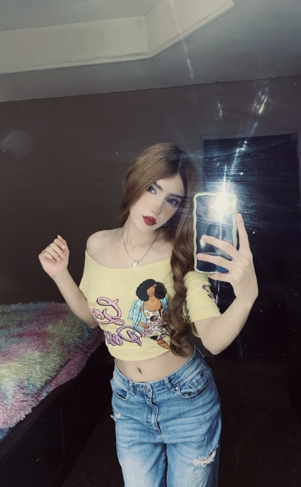

Hola, Soy Aylin Cervantes
Grupo 602
Hola, Soy Aylin. Soy Alumna de Noe Zavala, del grupo 602, me gusta mucho la materia de diseño grafico, me gusta todo lo que tenga que ver con el arte, me gusta la musica, dibujar, diseñar, etc... Mi comida favorita es el teriyaki y el sushi

Mis peliculas favoritas son:
- Diario de una pasion
- Titanic
- Scream 4
- Crepusculo
- A 2 metros de ti
- Masacre en texas
Top 5 de comidas
- Hamburguesa
- Pizza
- Tacos de pescado
- Teriyaki
- Spagetthi con chipotle
Estas son mis canciones favoritas
Irse